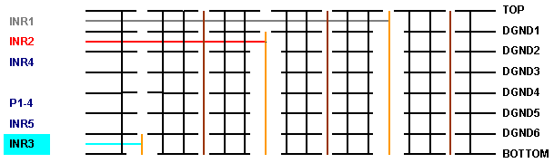

Trace routing on dedicated layers
By carefully distributing the signal traces to each layer, you can maintain a constant width of the traces and contain them inside the routing channels.
A critical item is the routing of high-speed traces between high-speed pogo vias. You should route high-speed traces only on layers above the layer where the high-speed via connects to a stripline.
The figure below shows an example of this routing.

For instance, the gray layer, INR1, is routed past a via which connects to the red layer, INR2, one level below. The gray trace has solid ground planes above and below, because the clearances in the ground layers are small, leaving room to route the trace.
If the gray trace was in a layer below INR2, then the trace would route directly over one of the large ground clearances.
Functional changes
- Introduced before SmarTest 6.3.2